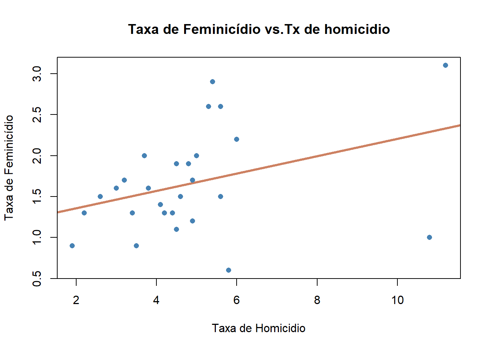

Vamos iniciar o estudo de modelos lineares começando pela Regresão Linear Simples (RLS). Mais específicamente, vamos estudar a RLS no contexto de dados de corte transversal. Tal abordagem, segmentada por tipos de dados, facilíta o entendimento das hipóteses do modelo.
Os conceitos estatísticos aplicados no estudo de RLS são os mesmos apresentados na seção anterior.
O matérial desta seção é baseado na 4ed do livro de Jeffrey Wooldridge, Introdução à Econometria: Uma Abordagem Moderna, de 2013. Embora o título do livro remeta à econometria, os modelos apresentados no livro são aplicaveis à diversas Ciências Sociais, tais como o Direito, Ciência Política, Sociologia, Psicologia Empírica etc…
A análise de Regressão é um instrumento poderoso para os centistas sociais. Podemos verificar como determinadas variáveis importantes nas ciencias sociais interagem com outras, as vezes em uma relação de causa e efeito.
Aqui também teremos que ter uma questão ou problema. Anteriormente gostariamos de entender o que estava acontecendo, qual a Renda pc das mulheres, qual a taxa de feminicídio… Agora queremos ir mais a fundo, porque determinados bairros tem mais crime do que outros? O que determina a renda pc de uma mulher?
5.1 Introdução
Começamos com o modelo mais geral da população:
\[y = \beta_0 + \beta_1x + u \]
Nesta equação, \(y\) é a variavel dependente ou também denominada de variável explicativa; \(x\) é a variável explicativa e \(u\) é o termo de erro. Essa equação é uma equação de regressão linear simples.
Vejamos um exemlo
Gostariamos de explicar a taxa de crimes nos bairros de uma cidade e consideramos que os níveis de desemprego nas localidades são importantes. Nosso modelo de regressão poderia ser específicado da seguinte maneira:
\[Crime_i = \beta_0 + \beta_1Desemprego_i + u\]
O subscrito \(i\) se refere a um bairro hipotético da cidade. Note que nesse caso,\(i\) é o subscrito que relaciona nossas unidades de observação (bairros). Nossas unidades de observação podem variar a depender do contexto em estudo: países, cidades, bairros, estados, pessoas, processos, varas, tribunais….
Note que, novamente o termo de erro, \(u\), está presente na equação. O termo de erro, não observado, capta tudo aquilo que afeta \(Crime\), mas que não estamos controlando, ou seja, que não é explicado pelo \(Desemprego\).
Voltemos a equação básica:
\[y = \beta_0 + \beta_1x + u \]
Na analise de RLS estamos interessados nos parâmetros \(\beta_0\) e sobretudo \(\beta_1\). A razão primordial para isso é que, tudo o mais constante, a relação acima aponta que
\[\Delta y = \beta_1 \Delta x \] , se \[\Delta u = 0\]
Isto é, se tudo o mais que afeta \(y\) permanecer inalterado, uma variáção em \(x\), \(\Delta x\), terá um impacto de \(\beta_1 \Delta x\) em \(y\). No exemplo da criminalidade, teremos que:
\[\Delta crime = \beta_1 \Delta desemprego \]
Assim, o aumento o de 1 ponto no desemprego irá ter o efeito de \(\beta_1\) unidades de crimes em média. Por isso, quando conseguimos estimar os parêmetros \(\beta\) estamos mais próximos de entender as relações entre \(x\) e \(y\) em nossas aplicações.
Cabe destacar algo bastante importante.As relações acima não encerram a questão da causalidade. Como podemos inferir um impacto causal do desemprego na criminalidade se estamos ignorando todos os demais fatores que ficaram de fora do modelo - fatores que são captados em \(u\) não observados.
5.1.1 Alguns Exemplos de Regressão Aplicados ao Contexto Jurídico:
Considere os seguintes exemplos de RLS aplicadas ao contexto do Direito
Previsão de Sentenças com Base na Gravidade do Crime: Onde, a variável dependente e tamanho da pena, e a variável independente é a Gravidade do Crime, \(\beta_0\)é o intercepto da regressão. \(\beta_1\) é o coeficiente de regressão que representa como a gravidade do crime influência o tamanho da pena, \(u\) é o termo de erro.
Análise de Fatores que Influenciam o Tempo de Julgamento: Variável Independente (\(x\)), Tipo de Processo (por exemplo, criminal, civil, administrativo). Variável Dependente (\(y\)), Tempo de Duração do Processo. Objetivo: Identificar se o tipo de processo tem impacto no tempo que um caso leva para ser concluído.
\[Tempo = \beta_0 + \beta_1 Processo + u\]
Previsão de Probabilidade de Recurso com Base em Decisões Anteriores: Variável Independente (\(x\)): Resultado da Decisão Anterior (por exemplo, deferimento ou negação do recurso). Variável Dependente (\(y\)): Probabilidade de Entrada com Recurso. Objetivo: Determinar a probabilidade de um recurso ser apresentado com base no resultado de decisões passadas.
\[Resultado = \beta_0 + \beta_1 Resultado_{-1} + u \]
Análise de Relação entre Número de Testemunhas e Veredito: Variável Independente (\(x\)): Número de Testemunhas. Variável Dependente (\(y\)): Veredito (por exemplo, culpado ou inocente). Objetivo: Investigar se o número de testemunhas influencia o veredito
\[ Veredito = \beta_0 + \beta_1 Testemunhas + u \]
5.2 Hipóteses sobre o comportamento do Termo de Erro
Se especificamos o modelo com \(\beta_0\), podemos assumir que \(u\), tem média igual a zero. Em notação de esperança matematica essa hipotese equivale a:
\[E(u) = 0\]
Podemos definir uma segunda hipotese sobre \(u\). Uma hipótese forte, é a de que \(u\) e \(x\) são independentes. Tal hípótese é a hipótese crucial do modelo de RLS:
\[E(u|x) = 0\]
Justas as hipóteses de \(E(u) = 0\) e \(E(u|x) = 0\) são denominadas de hipotese de média condicional zero.
Dessa forma, no nosso modelo inicial:
\[y = \beta_0 + \beta_1x + u\]
Aplicando o operador \(E( \cdot |x )\), obetmos
\[ E( y |x ) = \beta_0 + \beta_1x \]
Assim, na equação acima, temos um aumento de uma unidade em \(x\), implica em um aumento no valor esperado (ou em média) de \(y\) na magnitude de \(\beta_1\).
A equação acima, é caracterizada como função de regressão populacional. Essa função nos fornece a elação entre os diferentes níveis de\(x\) é o nível médio de \(y\), isto é \(E( y |x )\).
Função de Regressão Populacional
Agora, podemos voltar a nossa equação base e verificarmos o progresso feito no entendimento do modelo:
\[y = \beta_0 + \beta_1x + u \]
\[y = E( y |x ) + u \]
Na equação acima, \(E( y |x )\) é chamada de parte sistematica de \(y\). Isto é, a parte sistematicamente explicada por \(x\). Já o termo de erro não observado, \(u\) é a parte não sistematica de \(y\), não explicada por \(x\).
5.3 Estimação dos Parâmetros da RLS
Não conhecemos \(\beta_0\) e \(\beta_1\) queremos estimadores desses parametros: \(\hat{\beta_0}\) e \(\hat{\beta_1}\).
Suponha que tenhamos uma amostra aleatória da população: \(\{(x_i, y_i): i = 1, ..., n\}\). Poderia ser uma amostra de crimes e taxa de desemprego por bairros.
Em nosso modelo base:
\[y_i = \beta_0 + \beta_1x_i + u_i \]
onde \(u_i\) é o erro aleatório da \(i\)-ésima observação.
Onde, \(\bar{x}\) e \(\bar{y}\) são as médias amostrais de \(x\) e \(y\) respectivamente.
Os estimadores \(\hat{\beta}_0\) e \(\hat{\beta}_1\) são chamados de estimadores de Mínimos Quadrados Ordinários (MQO).
A ideia é que os parâmetros que estimamos, \(\hat{\beta}_0\) e \(\hat{\beta}_1\), são os parâmetros que minimizam a soma dos quadrados das diferenças entre nossos \(y_i\) obversados e seus valores preditos definidos como
\[y_i- \hat{y}_i =y_i - \hat{\beta}_0 + \hat{\beta}_1x_i=u_i\] Queremos minimizar o quadrado dessa diferença. Vejamos graficamente:
Valores Ajustados e Resíduos de MQO
Antes de passarmos para o proxímo tópico de RLS, cabe mencionar uma nota sobre terminologia: quando estimamos equações de RLS do tipo \(y = \beta_0 + \beta_1 x + u\), dizemos que “rodamos a regressão de\(y\) sobre \(x\) !”
5.3.1 Aplicação - Estimando uma Regressão Linear Simples
Vamos utilizar aqui o nosso banco de dados anterior sobre feminicídio. É um banco com poucas obserações e possui fim didátco, apesar de serem dados reais.
Uma questão incial é entender quem será \(Y\) e quem será \(X\). Estamos querendo entender a taxa de feminicídio. A questão é, quais são seus determinantes? Aqui precisamos de alguma teoria…mas or hora, vamos ter como hipótese inicial que quanto maior a taxa de homícídio espera-se que em média a taxa de feminicídio aumente. :
Apesar de parecer “muito complicado” na teoria, na prática o r estima uma RLS em segundos. A função para estimar é alm, ou linear model.
### Aplicação da RLS - Método dos Mínimos Quadrados Ordinários#carregando o pacote para ler arquivos em excelload("C:/Users/Alexandre_Nicolella/Aulas/FEA-RP/Jurimetria/jurimetria/final_fem_22.Rdata")#Vamos chamar a partir de agora nosso banco de dadosdados<- final_fem_22 ##Função para rodar a regressãomodelo <-lm(data = dados, feminic_tx ~ homic_tx)#Essa função resume a regressão, ja testar a hipótese sobre o coeficiente e da outras estatisticas que abordaremos a seguir.summary(modelo)
Call:
lm(formula = feminic_tx ~ homic_tx, data = dados)
Residuals:
Min 1Q Median 3Q Max
-1.28942 -0.30169 0.03482 0.30070 1.18192
Coefficients:
Estimate Std. Error t value Pr(>|t|)
(Intercept) 1.14673 0.28607 4.009 0.000485 ***
homic_tx 0.10580 0.05503 1.923 0.065990 .
---
Signif. codes: 0 '***' 0.001 '**' 0.01 '*' 0.05 '.' 0.1 ' ' 1
Residual standard error: 0.5882 on 25 degrees of freedom
Multiple R-squared: 0.1288, Adjusted R-squared: 0.09397
F-statistic: 3.697 on 1 and 25 DF, p-value: 0.06599
5.3.1.1 Entendendo os Resultados
1) Resíduos Residuals: apresenta a distribuição dos resíduos, observa-se que amediana dos resíduos está próxima a zero.
2)Coeficientes Em seguida, abaixo de Coefficients temos 5 colunas.
Coluna 1: Nome da variável
Coluna 2: Coeficiente estimado \(\hat{\beta_0}\) o intercepto e \(\hat{\beta_1}\) do termo da variável homicídio
Coluna 3: É o desvio padrão da estimativas de \(\beta\)
Coluna 4: É a estatistica t utilizada para fazer o teste de hipótese e neste caso, tem-se: \[H_0:\beta_0=0\] e \[H_0:\beta_1=0\]
Coluna 5: É o p-valor, a probabilidade de encontrarmos valores mais extremos da estatística t. Os asteriscos indicam *** signicante a 0,1% ** a 1% * a 5% e \(.\) a 10%.
Interpretando o Coeficiente
O coeficiente do intercepto nos diz que quando a taxa de homicídio for 0, ainda existira uma taxa de feminicídio de 1,4 pontos, \(\beta_0\), significante a 0,1%. E cada 1 ponto de aumento na taxa de homicídio, aumenta em 0,10 \(\beta_1\) pontos a taxa de feminicídio, significante a 10%.
3) \(R^2\): Em seguida temos o \(R^2\) e \(R^2\) ajustado. Essas estatísticas calculam quanto da variância da taxa de feminicídio pode ser explicada pela variância da taxa de homicídio. Quando estão próximos a 1 explicam muito, quanto estão próximos a 0 explicam pouco. No caso o nosso \(R^2\) ficou baixo e portanto boa parte da variabilidade do feminicídio, não foi explicada pela taxa de homicídio.
4) Estaística F: E por fim a estatística F mostra o grau de ajustamento do modelo. Se ela for significativa diz que o modelo é bem ajustados aos dados. As variáveis explicativas incluídas são importantes para a explicação da taxa de feminicídio.
VISUALMENTE
Abaixo tem-se os dados utilizados e a nossa reta de regressão estimada acima. Veja como ela se ajusta a nuve de pontos.
# Ajustando a reta de regessão.plot(dados$homic_tx, dados$feminic_tx,main ="Taxa de Feminicídio vs.Tx de homicidio",xlab ="Taxa de Homicidio",ylab ="Taxa de Feminicídio",col ="steelblue", # Cor dos pontospch =16, # Forma dos pontos (círculos sólidos)cex =1.0, # Tamanho dos pontosabline(modelo, col ="lightsalmon3", lwd =3))

5.4 Caracteristicas do Método dos Mínimos Quadrados Ordinários em Determinadas Amostras de Dados
5.4.1 Valores estimados e Resíduos
Uma vez estimados \(\hat{\beta}_0\) e \(\hat{\beta}_1\) temos os valores ajustados ou também denominados de valores preditos ou fitted values.
Para uma observação qualquer \(i\), seu valor estimado é:
\[\hat{y}_i= \hat{\beta}_0 + \hat{\beta}_1x_i\]
Todos os valores \(\hat{y}\) estarão sobre a reta de regressão.
O resíduo, tal qual definido anteriormente, será a diferença entre o valor ajustado \(\hat{y}\) e o verdadeiro \(y\) em nosso banco de dados:
\[\hat{u}_i = y_i - \hat{y}_i\]
Se \(\hat{u_i} > 0\) a regressaõ subestima \(y_i\). Se \(\hat{u_i} < 0\) a reta superestima \(y_i\). O cenário ideal é quando \(\hat{u}_i= 0\), algo que quase nunca acontece.
##Obtendo os residuos da regressãoresid <-residuals(modelo) k <-density(resid)plot(k, xlab="Erro",main="Densidade de Kernel para o erro")polygon(k, col="burlywood3", border="burlywood4")
5.4.2 Propriedades Algébricas do MQO
A Soma dos Resíduos é zero:
\[\sum_{i=1}^{n} \hat{u}_i = 0\]
###Soma dos resíduossum(resid)
[1] 8.881784e-16
#note que é um número praticamente igual a zero
A covariancia amostral entre a variavel explicativa e os resíduos é zero:
\[\sum_{i=1}^{n} x_i \hat{u}_i = 0\]
#obtendo a variável xx <- dados$homic_tx#somando com os residuossum(x*resid)
[1] 1.298961e-14
O ponto \((\bar{x},\bar{y})\) sempre estará sob a reta de regressão.
A média dos valores estimados, \(\bar{\hat{y}}\) é igual a média dos valores observados \(\bar{y}\).
Note que as estimatvas de MQO decompõe \(y\) em 2 partes: 1) os valores ajustados \(\hat{y}\) e os resíduos \(\hat{u}\).
Os valores de \(\hat{y}\) e \(\hat{u}\) são não correlacionados na amostra!
5.4.3 Qualidade do Ajuste
Nesta seção vamos responder a seguinte questão: “Quão bem\(x\) explica \(y\) ?”
Considere as seguintes definições
Soma dos Quadrado Totais (SQT):
\[\text{SQT} = \sum_{i=1}^{n} (y_i - \bar{y})^2\]
# Calcular a média da variável dependente (feminic_tx)media_feminic_tx <-mean(dados$feminic_tx)# Calcular a Soma dos Quadrados Totais (SQT)sqt <-sum((dados$feminic_tx - media_feminic_tx)^2)sqt
#r-quadrado do modelor_quadrado <-1- (sqr/sqt)r_quadrado
[1] 0.1288141
Novamente, o \(R^2\) é a porcentagem da variação de y que é explicada por \(x\). O valor de \(R^2\) sempre estará na RLS entre \(0\) e \(1\).
5.5 Unidade de Medida e Forma Funcional
Se a variável dependente é multiplicada por uma constante \(c\), então as estimativas do intercepto e da inclinação também serão multiplicadas por \(c\)
Se a variável explicativa é multiplicada por uma contante \(c\), então o coeficiente de inclinação será dívido por \(c\). Nada acontece com o intercepto.
Se a variável explicativa é dividida por uma constante \(c\), então o coeficiente de inclinação é multiplicado por \(c\). Nada acontece com a constante.
IMPORTANTE: O \(R^2\) não depende das unidades de nossas variáveis.
5.6 Incorporando não linearidades (nas variáveis!)
Minha primeira tabela
Modelo
Dependente
Explicativa
Interpretação de \(\beta_1\)
Nivel-nível
\(y\)
\(x\)
\(\beta_1 \Delta x\)
Nível-Log
\(y\)
\(ln(x)\)
\((\beta_1/100)\%\)\(\Delta x\)
Log-Nível
\(ln(y)\)
\(x\)
\(\% \Delta y = (100 \beta_1) \Delta x\)
Log_log
\(ln(y)\)
\(ln(x)\)
\(\% \Delta y = \beta_1\% \Delta x\)
#Criando uma nova coluna para as variaveis em logdados$Lnfeminic_tx <-log(dados$feminic_tx)dados$Lnhomic_tx <-log(dados$homic_tx)head(dados)